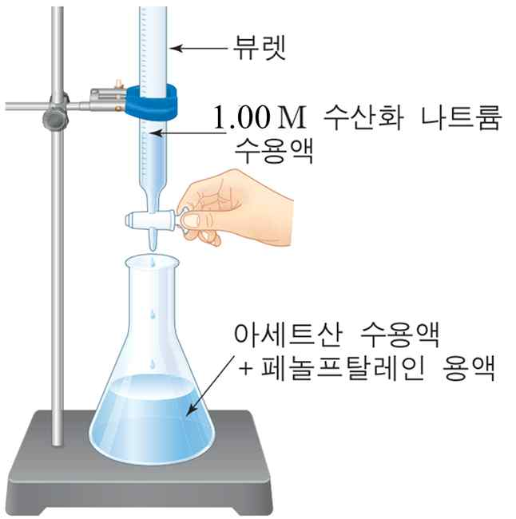

문제 1
단계 1
아세트산 용액과 수산화나트륨 용액을 섞으면 화학반응에 의해 열이 발생하게 된다. 위 산염기 반응의 반응식을 적어보시오. 브뢴스테드-로우리의 산염기 정의에 따라 위 반응에서 산과 염기로 작용하는 물질을 찾아보시오.
단계 2
다음은 식초에 포함된 아세트산의 농도를 구하기 위한 실험이다.
<실험>
(1) 피펫으로 식초 1.00 mL를 취하여 삼각플라스크에 넣고 증류수를 넣어 용액의 부피를 100 mL가 되게 묽힌 뒤 페놀프탈레인 용액 2-3방울을 떨어뜨린다.
(2) 1.00 M 수산화나트륨 용액을 뷰렛에 넣고 수용액을 약간 흘려보낸 후 눈금(a)을 읽는다.
(3) (1)의 삼각 플라스크에 (2)의 수산화나트륨 용액을 용액의 색깔이 붉게 변할 때까지 조금씩 떨어뜨리고 색깔이 사라지지 않을 때 뷰렛의 눈금(b)를 읽는다.

위의 실험을 통하여 얻을 수 있는 아세트산의 농도는 얼마인가? (뷰렛의 눈금은 아래로 갈수록 커지며, 눈금의 단위는 mL이다. 수용액의 온도는 25°C로 일정하게 유지한다.)
단계 3
(1) 위의 과정에서 구하게 되는 식초 속의 아세트산의 농도는 실제값에 비해서 다소 부정확하게 얻어질 것으로 예상된다. 그 이유는 무엇일까?
(2) 위의 실험을 염산 수용액과 암모니아 수용액으로 진행하는 경우에는 페놀프탈레인을 지시약으로 사용하면 매우 부정확한 결과를 얻게 되는데 그 이유는 무엇인가?